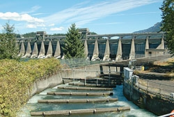
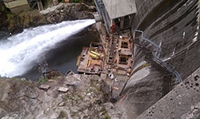
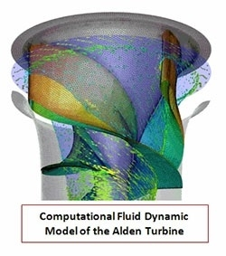

Hydropower significantly contributes to the nation's renewable energy portfolio. In fact, over the last decade, the United States obtained over 6% of its electricity from hydropower sources. As the largest source of renewable electricity in the United States, there remains vast untapped resource potential in hydropower. The Water Power Program works to do the following:
- Address environmental and regulatory barriers that prevent significant amounts of deployment
- Assess and quantify the value of hydropower to the nation's electric grid and its ability to integrate other variable renewable energy technologies
- Develop a vibrant U.S. hydropower workforce and research community.
Learn more about the Water Power Program's work in the following areas of hydropower market acceleration and deployment:
- Environmental Research
- Grid Value Assessments and Services
- Skills Assessment and Workforce Development
- Hydropower Market Acceleration and Deployment Accomplishments.
Environmental Research
Hydropower can have adverse environmental impacts on fish populations and migrations, on water quality in reservoirs and downstream from dams, and on river habitats both upstream and downstream from dams. The Water Power Program works to design, develop, and test new ways of reducing these adverse impacts, which have slowed the development of new hydropower generation and improvements in operational flexibility. The program's focus areas in environmental research include the following:

- Designing low-impact hydropower technologies—The Water Power Program is investing in tools and methods to develop, demonstrate, and validate environmentally and fish friendly technologies. Its investments have resulted in the design of a turbine that better allows for the downstream passage of fish and a new set of computational tools that estimate fish passage risk to help ensure that biological impact is considered during turbine design.
- Water quality—The Water Power Program is investing in the development and demonstration of more accurate water temperature, dissolved oxygen models, and aerating turbines that will enable operators to better meet environmental mandates, while increasing electricity generation.
- Climate change—Amid questions regarding the impacts of climate change on hydropower, as well as hydropower reservoirs’ contributions to greenhouse gas emissions, the Water Power Program is investing in scientific modeling and methods that assess environmental conditions surrounding hydropower.
Grid Value Assessments and Services
Hydropower has the potential to increase the flexibility and stability of the U.S. electric grid and support the integration of variable renewable resources like wind and solar. The Water Power Program seeks to maximize this potential value by modeling and analyzing the value of hydropower assets and pumped storage in U.S. power system operation, as well as by developing and deploying technologies that increase operational flexibility, including pumped storage. The program also works to improve regional computer models to better assess potential capacity expansions of pumped storage and facilitate the introduction of other variable renewable resources into the market. A U.S. Department of Energy 2015 report to Congress outlines key activities that can help accelerate pumped-storage development in the United States.
Skills Assessment and Workforce Development
The hydropower industry employs 200,000–300,000 workers in the United States—making it not only the longest-running, but also the largest renewable electricity production workforce in the nation. A major challenge faced by the hydropower industry is replacing the large portion of the skilled hydropower workforce that is eligible, or will soon be eligible, for retirement. The National Hydropower Association estimates as much as 40% of the workforce will soon be eligible for retirement. The Water Power Program is investing in two efforts to evaluate and support the needs of tomorrow’s hydropower workforce.
Hydropower Workforce Study
Led by Navigant Consulting, Inc. with technical support from the National Renewable Energy Laboratory and funding from DOE, this study will evaluate the workforce needs and skill requirements of the current and future hydropower industry, and catalogue education and training programs currently available in the United States to support the industry. Study results, expected in 2015, will identify gaps in training programs considering projected workforce needs and identify potential solutions. For information or to participate in this study, contact Jay Paidipati at Navigant Consulting, Inc.
Hydro Research Awards Program
The Hydro Research Foundation currently leads the Hydro Research Awards Program—a successful graduate research awards program funded by DOE to spur innovation in hydropower technologies and help recruit the next generation of skilled hydropower engineers and scientists. To date, DOE has supported 50 researchers at U.S. universities.
Market Acceleration and Deployment Accomplishments
The Water Power Program has numerous accomplishments in the areas of hydropower market acceleration and deployment. The projects described below highlight just a few of the program's recent successes. 
Identifying Win-Win Opportunities for Power and Environment
The Water Power Program is funding a team of national laboratories under the direction of the Federal Memorandum of Understanding for Hydropower (MOU) to conduct basin-scale assessments to identify opportunities that allow basin stakeholders to generate more electricity, meet water demands, and enhance the environment in a given basin. The assessments included extensive research, stakeholder outreach, and modeling.
On March 24, 2015 an extension for an additional five years was signed, beginning phase II of the MOU, which is helping meet the nation’s needs for reliable, affordable, and environmentally sustainable hydropower by strengthening a long-term working relationship, prioritizing similar goals, and aligning ongoing and future renewable energy development efforts between the Agencies.
Advanced Turbine Design Addresses Key Environmental Challenge
The Water Power Program supports the development of more efficient and environmentally friendly hydropower turbines that can compete with traditional designs. One such project is the Alden Turbine, which was designed to reduce fish mortality while generating at efficiencies equal to or better than conventional Francis turbines. After extensive testing and demonstration, researchers found that the Alden turbine allowed for safe downstream passage and optimal hydropower generation. Deployment of this fish-friendly turbine will facilitate hydropower development in areas that were previously off limits to hydropower because of potential impacts to fish populations.
Sensor Fish Reduces Costs and Complexity of Determining Biological Performance of Turbines
Danger to fish is a major concern when building or refurbishing hydropower facilities. In order to protect fish from harm, researchers must first understand the conditions encountered by fish attempting to navigate spillways and turbine passages. To do this, DOE invested in Sensor Fish, a small device deployed to study the conditions faced by fish swimming through hydropower installations. Before the design of the Sensor Fish, biologists and engineers relied on computer models and limited data available from live fish tests. Now, as the device moves through hydropower facilities, biologists and engineers can use the Sensor Fish in real-world conditions to precisely measure changes in pressure, acceleration, and turbulence. Information from the next-generation Sensor Fish will be a crucial tool to more reliably and cost effectively ensure that our nation’s new and existing hydropower facilities not only provide renewable energy, but do so without negatively impacting the natural environment.
Hydroelectric Facility Modernization Project
The American Recovery and Reinvestment Act (ARRA) of 2009 provided $16.8 billion in supplemental appropriations to DOE's Office of Energy Efficiency and Renewable Energy. From this total, the Water Power Program received $30 million, which was used to support both large and small hydroelectric projects.
The Water Power Program issued seven competitive awards to hydropower generation facilities across the country totaling $29.85 million, with over $100 million in cost share. These awards were aimed at demonstrating the impressive annual power generation improvements that can be realized from upgrading existing facilities with modern turbine technologies and more efficiently utilizing available resources. The increased generation resulting from the ARRA projects is estimated to exceed 365,000 megawatts per hour annually; enough to meet the annual electric usage of more than 30,000 average U.S. homes at an estimated incremental cost of less than four cents per kilowatt-hour.
The average improvement in annual generation across the seven facilities is estimated to be 18%, more than tripling the 5% goal identified in the original funding opportunity announcement. The projects created skilled jobs in the manufacturing and construction industries by adding more than 330 full time equivalent jobs, not including the labor hours for material and equipment suppliers, and sustaining an estimated 700 manufacturing jobs for major aluminum fabrication operations in Alcoa, Tennessee.
The projects involved one or more of the following improvements: (a) installation of modern turbines with higher efficiency, increased power generation and reduced environmental impacts; (b) improved resource utilization including accommodation of lower river flow rates or seasonal flows; (c) utilization of currently diverted and unutilized water flows; (d) innovative fish collection and passage systems; and (e) system designs resulting in increased reliability and reduced operation and maintenance costs.
Three awards were made to large (>50 megawatt) facilities:
- Alabama Power Company
- Alcoa Power
- City of Tacoma.
Four awards were made to smaller (<50 megawatt) facilities:
- City of Boulder
- Minnesota Power
- City of North Little Rock
- County of Los Alamos.
Award recipients included cities, counties, and private industry operating both large and small hydroelectric facilities. To learn more about the awardees, read the hydropower projects report.
Making Hydropower More Sustainable
In coordination with DOE’s Oak Ridge National Laboratory, Pacific Northwest National Laboratory, and Argonne National Laboratory, the Water Power Program directed a series of studies to better understand and predict the effects of variable stream flows on fish and wildlife. Several of these projects charted downstream river flows, studied their ecological effects, and developed tools and frameworks to help industry provide better conditions for water-dependent ecosystems near hydropower facilities.
Assessing Climate Change and Hydropower
In coordination with DOE's Oak Ridge National Laboratory, the Water Power Technologies Office oversaw an assessment of the potential impacts of climate change on hydropower at federal facilities and operational responses to potential impacts. This work was legislatively mandated in Section 9505 of the SECURE Water Act in the Omnibus Public Lands Management Act of 2009, and the original findings are detailed in a 2012 technical report and summarized in a 2013 report to Congress. In January of 2017, an updated 5-year assessment and Report to Congress was also released.
Amid questions regarding the amount of greenhouse gas emissions from hydropower reservoirs, the Water Power Program, in coordination with DOE’s Oak Ridge National Laboratory and Pacific Northwest National Laboratory, developed, tested, and demonstrated a set of methods to measure and predict emissions. Results from measurement campaigns at several reservoirs in the southeastern and northwestern United States indicated that, unlike some tropical hydropower reservoirs, older and more temperate reservoirs in the United States are far less likely to emit greenhouse gases above normal limits.